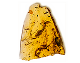

RTR: Imperium Surrectum
RTR: Imperium SurrectumAmber Collectors (Urban) chain
3 levels, each replacing the one before it — you upgrade in place rather than building alongside.
Amber Collectors (Urban) → Amber Merchants' Exchange (Urban) → Amber Exports (Urban)
Pictures are the game's own building art. Where a culture ships none of its own, the game falls back to another culture's, and that is what is shown here.
Levels at a glance
| Level | Cost | Build time | Minimum settlement | Upgrades to | Level | Cost | Build time | Minimum settlement | Upgrades to | ||
|---|---|---|---|---|---|---|---|---|---|---|---|
| Amber Collectors (Urban) | 2,000 | 3 | large town | Amber Merchants' Exchange (Urban) |  | Amber Merchants' Exchange (Urban) | 4,000 | 5 | city | Amber Exports (Urban) | |
| Amber Exports (Urban) | 12,000 | 8 | large city | — |
Costs in denarii, build time in turns.
Amber Merchants' Exchange (Urban)

A larger operation, trading amber as prized as gold in far-off markets, bringing in greater quantities of this precious fossilized resin.
Gold or amber? One can be spent, the other flaunted. You choose.
With expanded trade routes and connections deep into the amber-rich lands of the north, this trader is now handling larger quantities of the prized resin.
Amber amulets, jewelry, and carvings find their way into the homes of the wealthy, and the traders themselves grow richer with each deal.
The gods may weep, but the traders certainly won't.
| Cost | 4,000 denarii | Build time | 5 turns | Minimum settlement | city | Upgrades to | Amber Exports (Urban) |
What it does
- +3 trade income
- +1 population growth
- +2 public order (happiness)
Amber Collectors (Urban)

Where nature's precious resin changes hands, one shiny bead at a time. This modest amber trader has set up shop, dealing in small quantities of this golden treasure.
They say amber is the tears of the gods, but for us, it’s just a shiny business.
This small trader deals in amber, the golden fossilized resin prized for its beauty and mystical properties.
It may be modest in size, but for those seeking protection from evil spirits or a little extra shine in their wardrobe, amber is worth every coin.
The trader knows the worth of each dazzling piece, even if the gods might shed more "tears" in jealousy.
| Cost | 2,000 denarii | Build time | 3 turns | Minimum settlement | large town | Upgrades to | Amber Merchants' Exchange (Urban) |
What it does
- +2 trade income
- +1 public order (happiness)
Amber Exports (Urban)

An amber empire that stretches across seas and land, glowing with wealth, enriching the region as the golden resin flows outward.
The tears of the gods? Or the tears of those who can’t afford it?
With amber demand booming, exports have begun to pour out of the region, bound for the courts of kings and the palaces of the wealthiest, giving a culture conversion bonus in all your settlements.
The amber trade has grown so lucrative that other regions now look on with envy, while the coffers of this land grow fuller with each shipment of golden resin.
| Cost | 12,000 denarii | Build time | 8 turns | Minimum settlement | large city |
What it does
- +4 trade income
- +1 population growth
- +3 public order (happiness)